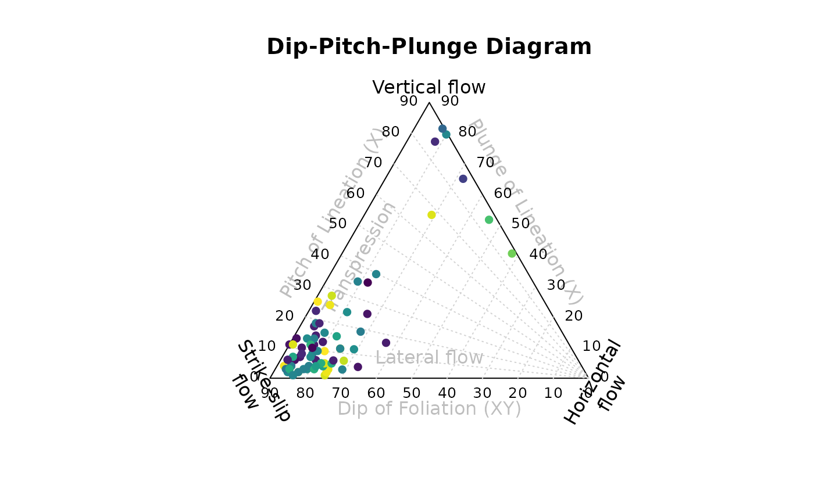
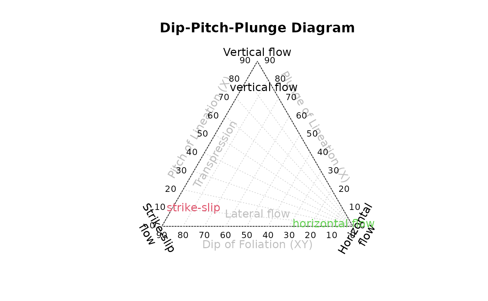

Ternary fabric orientation diagram after Balé and Brun (1989) showing the pitch and plunge of stretching lineation (X) and the dip of the foliation plane (XY).
Usage
balebrun_plot(
x,
labels = NULL,
main = "Dip-Pitch-Plunge Diagram",
extra_labels = TRUE,
add = FALSE,
...
)Arguments
- x
object of class
"Pair"- labels
character. Text labels
- main
character. The title of the plot.
- extra_labels
logical. Should some extra labels be added to the plot?
- add
logical. Should data be plotted to an existing plot?
- ...
optional plotting parameters passed to
graphics::points()
References
Balé, P., & Brun, J.-P. (1989). Late Precambrian thrust and wrench zones in northern Brittany (France). Journal of Structural Geology, 11(4), 391–405. https://doi.org/10.1016/0191-8141(89)90017-5
Examples
balebrun_plot(simongomez, col = assign_col(simongomez[, 'azimuth']), pch = 16)

balebrun_plot(Pair_from_pitch(Plane(0, 80), 80), "vertical flow", col = 1, add = FALSE)
balebrun_plot(Pair_from_pitch(Plane(0, 80), 10), "strike-slip", col = 2, add = TRUE)
balebrun_plot(Pair_from_pitch(Plane(0, 10), 10), "horizontal flow", col = 3, add = TRUE)
